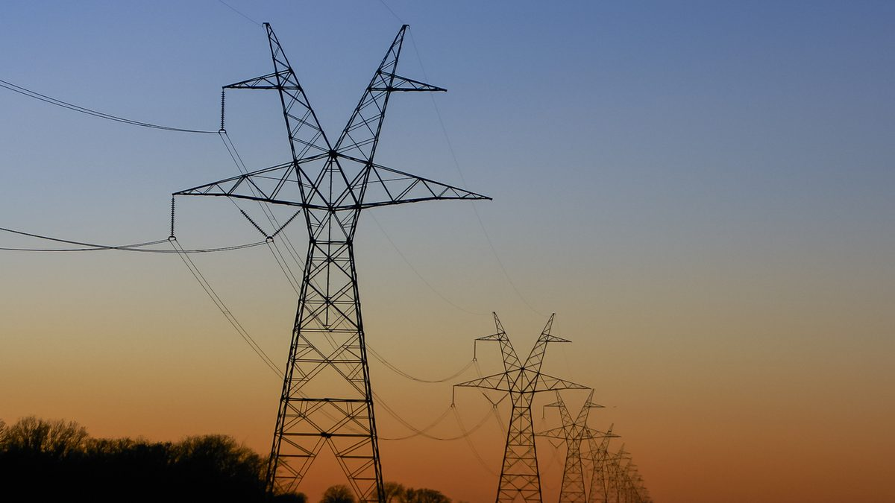

EE. UU. ordena medidas eléctricas de emergencia para 65 millones de personas
La orden del Departamento de Energía permite a PJM operar centrales concretas y usar generadores de respaldo, también en centros de datos, del 13 al 16 de octubre.

Puntos clave
- WASHINGTON: El Departamento de Energía de Estados Unidos puso la red eléctrica más grande del país bajo una orden federal de emergencia durante cuatro días, desde el martes 13 de octubre hasta el…
- La orden, número 202-26-50, la emitió el 12 de octubre el secretario de Energía, Chris Wright, después de que PJM Interconnection la pidiera el 11 de octubre.
- Los funcionarios federales y PJM subrayaron lo que la orden no es.
WASHINGTON: El Departamento de Energía de Estados Unidos puso la red eléctrica más grande del país bajo una orden federal de emergencia durante cuatro días, desde el martes 13 de octubre hasta el viernes 16 de octubre, mientras un calor inusual para el otoño, fuertes paradas de mantenimiento y obras en líneas de transmisión aprietan el suministro en el Atlántico medio y parte del Medio Oeste.
La orden, número 202-26-50, la emitió el 12 de octubre el secretario de Energía, Chris Wright, después de que PJM Interconnection la pidiera el 11 de octubre. PJM opera la red para más de 65 millones de personas en 13 estados y Washington, DC. La orden permite a PJM despachar centrales nombradas y ordenar que funcionen cuando haga falta para mantener estable la red. Como último recurso, antes o durante el nivel más alto de emergencia, PJM también puede ordenar que funcionen generadores de respaldo, incluidos los de centros de datos y otras grandes instalaciones. PJM puede apoyarse en los propietarios de líneas y en las distribuidoras locales para cumplir la orden.
Los funcionarios federales y PJM subrayaron lo que la orden no es. No es un aviso de que vienen apagones, y PJM dijo que sus alertas para el 13 de octubre no exigen ninguna acción de los clientes. El objetivo es que cada megavatio disponible sea alcanzable antes de que el sistema se tense, no después.
Por qué importa
Las emergencias de red solían ser una historia de verano. Esta llegó a mediados de octubre, en plena temporada de mantenimiento de otoño, cuando centrales y líneas se desconectan a propósito para reparaciones. PJM previó una demanda de unos 111.500 megavatios o más el 13 de octubre, con unas 61.591 megavatios de generación fuera de servicio. Para el 14 de octubre, PJM esperaba quedar a menos de 900 megavatios de su margen de reserva, un colchón fino para una red de este tamaño. La presión más fuerte se esperaba en las zonas de Baltimore Gas and Electric, Pepco y Dominion, que cubren Maryland, Virginia, Carolina del Norte y el área de Washington, DC.
Para los hogares, el significado práctico es simple. Si la orden funciona, no pasa nada, y esa es la meta. Las luces se quedan encendidas y la mayoría de la gente nunca sabrá que la semana estuvo cerca del límite.
El contexto
No es la primera vez este año que PJM necesita ayuda federal. Wright emitió dos órdenes de emergencia parecidas en junio, durante una ola de calor de verano. La orden de octubre sigue el mismo patrón bajo la sección 202(c) de la Ley Federal de Energía. El Departamento de Energía señaló más de 35 gigavatios de generación de respaldo sin usar en todo el país como un recurso que estas órdenes pueden aprovechar.
Qué sigue
La orden vence el 16 de octubre, cuando se espera que bajen las temperaturas. PJM operará el sistema día a día hasta entonces, con la prueba más dura prevista el 13 y el 14 de octubre. Hay que vigilar el margen de reserva. Si se mantiene, esto será una precaución de cuatro días que casi nadie notó. Si hace falta una segunda orden, el apretón de otoño se convertirá en una historia mayor sobre cuánta generación de sobra tiene realmente la red del este fuera del verano.
Cronología
- Oct 11, 2026PJM solicita al Departamento de Energía una autorización de emergencia, con una previsión de demanda cercana a 111,500 megavatios para el 13 de octubre.
- Oct 12, 2026El secretario de Energía, Chris Wright, emite la Orden de Emergencia n.º 202-26-50.
- Oct 13, 2026La orden entra en vigor. PJM emite alertas de Generación Máxima y de Gestión de Carga para la jornada.
- Oct 16, 2026Está previsto que la orden de emergencia expire a medida que bajen las temperaturas.